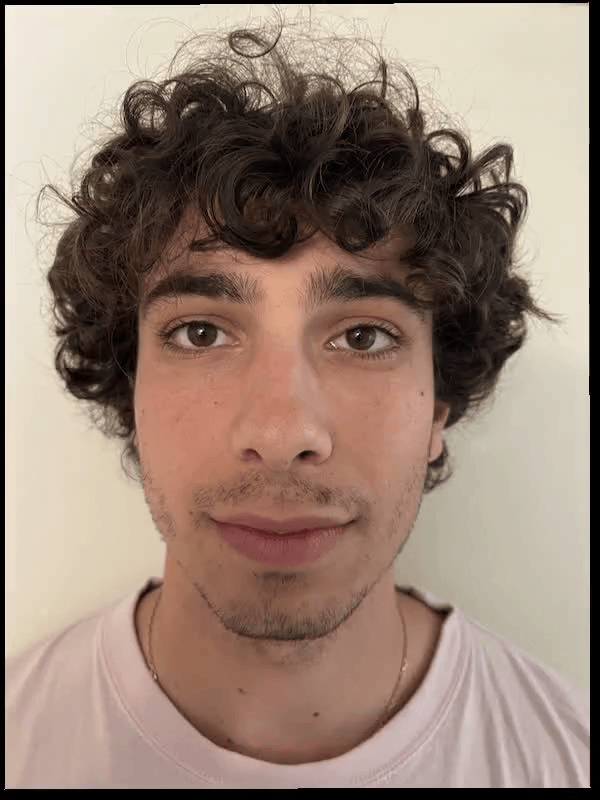

Project Overview
In this project I explore various face morphings: morphing two images to create a blend between twopeoples faces, morphing the shape of an image, computing a population average face, and more.
Computing a Midway Face
In this part I create a midway face between myself and my friend Dylan. The general approach is to define a set of corresponding points between the two images and then triangulate these two images. Using an affine transformation you can morph a triangle from one image into the shape of the correspondiding triangle in another image. Lastly, you average the pixel vlaues.
AJ's Face
Dylan's Face
Midway Face
Morph Video
This is a 1 second video which I transition from my face to Dylan's face in 30 frames with progessively more pixel and warp weight on the respective images.
The "Mean face" of a population
For this part I computed the average face of the Danes dataset. I then morphed my face into the average face as well as morphed the average face into my face.
Mean population face
AJ morphed into Average
Average morphed into AJ
Morphing Dane's faces into the average

Original
Warped
Original
Warped
Bells and Whistles
Here I isolated the Danes dataset to just the female images and computed an average of just this subset. I then I morphed my face into the female shape, mrophed my appearance into the female appearance and morphed both the shape and appearance.
Average female face
AJ morphed into female shape
AJ morphed into female appearance
Both appearance and shape morph